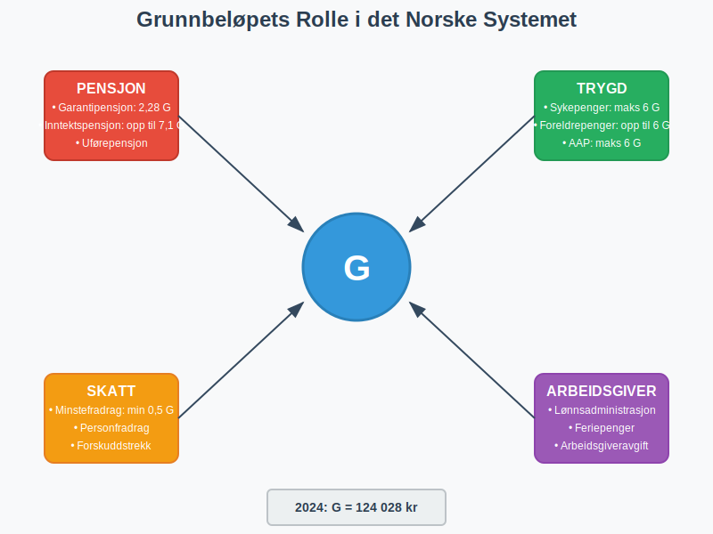
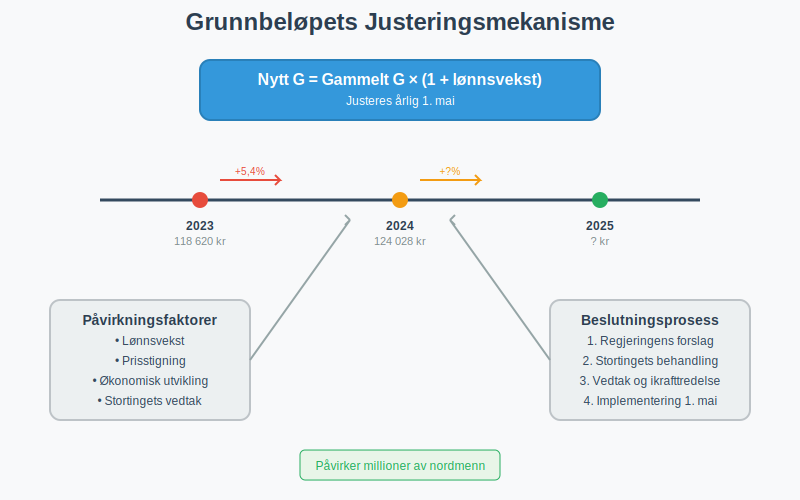
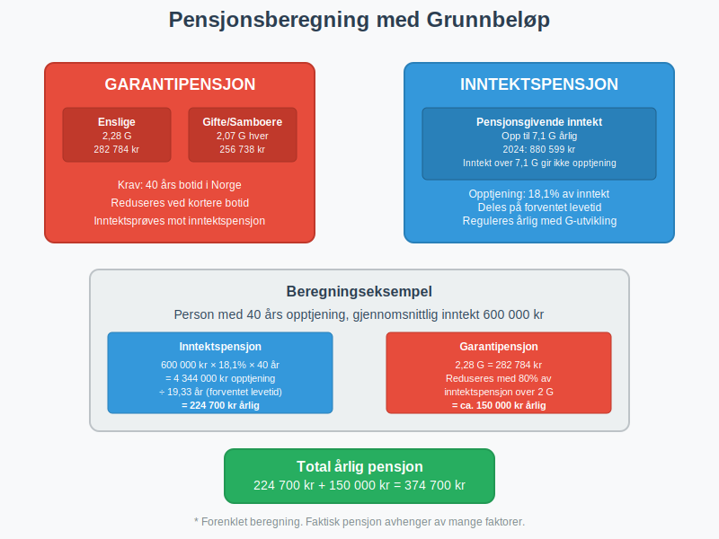
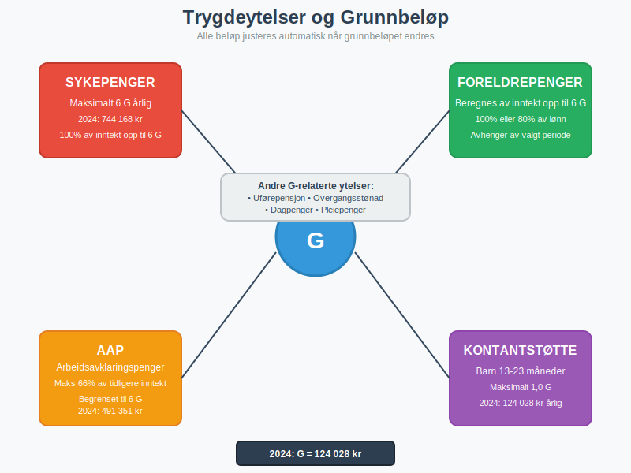
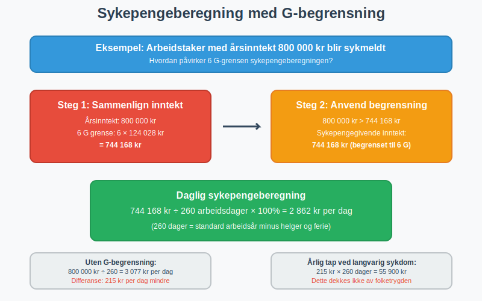
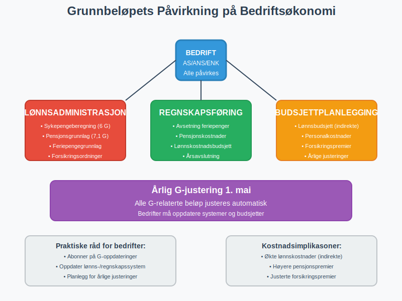

Grunnbeløpet (forkortet G) er en av de mest fundamentale størrelsene i det norske trygde- og skattesystemet. Det fungerer som en referanseenhet som brukes til å beregne en rekke offentlige ytelser, pensjon, skattefradrag og arbeidsgiverforhold. Denne artikkelen gir en omfattende gjennomgang av grunnbeløpets rolle, beregning og praktiske anvendelse i norsk økonomi.
Seksjon 1: Grunnbeløpets Definisjon og Formål
Grunnbeløpet er et årlig fastsatt beløp som justeres i takt med den generelle inntekts- og prisutviklingen i samfunnet. Det ble innført som en del av folketrygden for å sikre at trygdeytelser og pensjoner opprettholder sin kjøpekraft over tid.

1.1 Historisk Bakgrunn
Grunnbeløpet ble etablert sammen med folketrygden i 1967 som en måte å standardisere og automatisere justeringen av trygdeytelser. Før dette måtte hver enkelt ytelse justeres individuelt gjennom politiske vedtak, noe som var både tidkrevende og inkonsistent.
1.2 Juridisk Grunnlag
Grunnbeløpet er hjemlet i folketrygdloven § 1-4, som gir Stortinget myndighet til å fastsette beløpet årlig. Justeringen skjer vanligvis 1. mai hvert år, basert på lønnsveksten for foregående år.
Seksjon 2: Fastsettelse og Justering av Grunnbeløpet
2.1 Beregningsmetode
Grunnbeløpet justeres årlig basert på den gjennomsnittlige lønnsveksten i Norge. Formelen for justering er:
Nytt G = Gammelt G × (1 + lønnsvekst)

2.2 Historisk Utvikling av Grunnbeløpet
Tabellen nedenfor viser utviklingen av grunnbeløpet de siste 15 årene:
| År | Grunnbeløp (G) | Endring fra forrige år | Prosentvis økning |
|---|---|---|---|
| 2024 | 124 028 kr | +6 397 kr | 5,4% |
| 2023 | 118 620 kr | +7 583 kr | 6,8% |
| 2022 | 111 477 kr | +5 829 kr | 5,5% |
| 2021 | 106 399 kr | +4 174 kr | 4,1% |
| 2020 | 101 351 kr | +2 333 kr | 2,4% |
| 2019 | 99 858 kr | +3 346 kr | 3,5% |
| 2018 | 96 883 kr | +3 379 kr | 3,6% |
| 2017 | 93 634 kr | +1 563 kr | 1,7% |
| 2016 | 92 576 kr | +2 124 kr | 2,3% |
| 2015 | 90 068 kr | +2 837 kr | 3,3% |
| 2014 | 87 328 kr | +3 455 kr | 4,1% |
| 2013 | 85 245 kr | +2 775 kr | 3,4% |
| 2012 | 82 122 kr | +3 301 kr | 4,2% |
| 2011 | 79 216 kr | +3 301 kr | 4,3% |
| 2010 | 75 641 kr | +1 926 kr | 2,6% |
Seksjon 3: Grunnbeløpets Anvendelsesområder
3.1 Pensjonsberegninger
Grunnbeløpet er fundamentalt for beregning av både alderspensjon og uførepensjon. Den nye alderspensjonen som ble innført i 2011 baserer seg på et komplekst system hvor grunnbeløpet spiller en sentral rolle.

3.1.1 Garantipensjon
Garantipensjonen utgjør en minimumsytelse for alle som har bodd i Norge i minst 40 år. For 2024 er garantipensjonen:
- Enslige: 2,28 G (282 784 kr)
- Gifte/samboere: 2,07 G hver (256 738 kr hver)
3.1.2 Inntektspensjon
Inntektspensjonen beregnes basert på pensjonsgivende inntekt opp til 7,1 G årlig. Inntekt over dette nivået gir ikke rett til ytterligere inntektspensjon.
3.2 Trygdeytelser
En rekke trygdeytelser beregnes som en andel av grunnbeløpet:
- Barnetrygd: Fast beløp per barn (ikke knyttet til G)
- Kontantstøtte: Maksimalt 1,0 G for barn 13-23 måneder
- Foreldrepenger: Beregnes av pensjonsgivende inntekt opp til 6 G
- Sykepenger: Maksimalt 6 G årlig
- Arbeidsavklaringspenger: Maksimalt 66% av tidligere inntekt, begrenset til 6 G

3.3 Skattefradrag og -grenser
Grunnbeløpet påvirker også flere elementer i skattesystemet:
3.3.1 Minstefradrag
Minstefradraget i forskuddstrekk beregnes delvis basert på grunnbeløpet. For lønnsinntekt er minstefradraget minimum 4% av inntekten, men minst 0,5 G.
3.3.2 Personfradrag
Personfradraget i skatt er ikke direkte knyttet til grunnbeløpet, men justeres ofte i takt med grunnbeløpets utvikling for å opprettholde kjøpekraften.
3.4 Arbeidsgiverforhold
For arbeidsgivere har grunnbeløpet betydning for flere forhold:
3.4.1 Arbeidsgiveravgift
Arbeidsgiveravgiften beregnes av lønn og andre ytelser, med visse fradrag som kan være knyttet til grunnbeløpet.
3.4.2 Feriepenger
Feriepengene beregnes som 12% av feriepengegivende inntekt, hvor grunnbeløpet kan påvirke beregningsgrunnlaget for enkelte ytelser.
Seksjon 4: Praktiske Beregningseksempler
4.1 Eksempel: Beregning av Sykepenger
La oss se på et praktisk eksempel på hvordan grunnbeløpet påvirker sykepengeberegningen:
Situasjon: En arbeidstaker har en årsinntekt på 800 000 kr og blir sykmeldt.
Beregning:
- Maksimal sykepengegivende inntekt: 6 G = 6 × 124 028 kr = 744 168 kr
- Siden 800 000 kr > 744 168 kr, begrenses grunnlaget til 744 168 kr
- Sykepenger per dag: (744 168 kr ÷ 260 dager) × 100% = 2 862 kr per dag

4.2 Eksempel: Pensjonsopptjening
Situasjon: En person har hatt følgende inntekter over karrieren:
- År 1-10: 400 000 kr årlig
- År 11-20: 600 000 kr årlig
- År 21-30: 900 000 kr årlig
Pensjonsopptjening:
- Inntekt opp til 7,1 G gir pensjonsopptjening
- For 2024: 7,1 G = 880 599 kr
- År 21-30: Kun 880 599 kr av 900 000 kr gir pensjonsopptjening
Seksjon 5: Grunnbeløpets Betydning for Bedrifter
5.1 Lønnsadministrasjon
Bedrifter må holde seg oppdatert på grunnbeløpet for korrekt beregning av:
- Maksimal sykepengegivende inntekt ved sykefravær
- Pensjonsgivende inntekt for ansatte
- Feriepengegrunnlag for enkelte ytelser
- Forsikringsordninger knyttet til inntektsnivå
5.2 Regnskapsføring
I regnskapsføring må bedrifter ta hensyn til grunnbeløpsjusteringer når de:
- Beregner avsetninger for feriepenger
- Estimerer pensjonskostnader
- Budsjetterer lønnskostnader for kommende år

5.3 Budsjettplanlegging
Når grunnbeløpet justeres årlig, påvirker dette bedriftenes:
- Lønnsbudsjett: Indirekte gjennom lønnsforhandlinger
- Personalkostnader: Direkte gjennom trygdeavgifter og pensjonsordninger
- Forsikringspremier: Mange forsikringer er knyttet til G-nivået
Seksjon 6: Sammenligning med Andre Land
6.1 Nordiske Land
Andre nordiske land har lignende systemer:
- Sverige: Prisbasbelopp og inkomstbasbelopp
- Danmark: Grundbeløb for forskellige sociale ydelser
- Finland: Kansaneläkeindeksi
6.2 Internasjonale Perspektiver
Mange land bruker lignende referanseindekser for å justere sosiale ytelser, men få har et så sentralisert system som det norske grunnbeløpet.
Seksjon 7: Fremtidige Utviklingstrekk
7.1 Demografiske Utfordringer
Med en aldrende befolkning vil grunnbeløpets rolle i pensjonssystemet bli enda viktigere. Regjeringen vurderer kontinuerlig justeringer for å sikre systemets bærekraft.
7.2 Digitalisering
Automatisering av beregninger basert på grunnbeløpet gjør systemet mer effektivt, men krever også at alle aktører holder seg oppdatert på endringer.

Seksjon 8: Praktiske Råd for Bedrifter og Privatpersoner
8.1 For Bedrifter
- Hold deg oppdatert: Abonner på oppdateringer fra NAV og Skatteetaten
- Systemoppdateringer: Sørg for at lønns- og regnskapssystemer oppdateres med nye G-verdier
- Budsjettplanlegging: Ta høyde for årlige G-justeringer i budsjettarbeidet
- Kompetanse: Sørg for at regnskapsførere og lønnsadministratorer forstår G-systemet
8.2 For Privatpersoner
- Pensjonsplanlegging: Forstå hvordan G påvirker din fremtidige pensjon
- Forsikring: Vurder om forsikringsdekning bør justeres når G øker
- Skatteplanlegging: Følg med på hvordan G-endringer påvirker fradrag
Konklusjon
Grunnbeløpet er en hjørnestein i det norske velferds- og skattesystemet som påvirker millioner av nordmenn daglig. Fra pensjonsberegninger til sykepengeytelser, fra skattefradrag til arbeidsgiverforhold - grunnbeløpet er en fundamental størrelse som sikrer at det norske systemet justeres rettferdig og forutsigbart.
For bedrifter er det avgjørende å forstå hvordan grunnbeløpet påvirker lønnsadministrasjon, regnskapsføring og budsjettplanlegging. For privatpersoner er kunnskap om grunnbeløpet viktig for å forstå rettigheter og plikter i det norske systemet.
Med den kontinuerlige utviklingen av det norske samfunnet vil grunnbeløpet fortsette å være et sentralt verktøy for å sikre rettferdig fordeling og opprettholdelse av kjøpekraft for alle borgere.